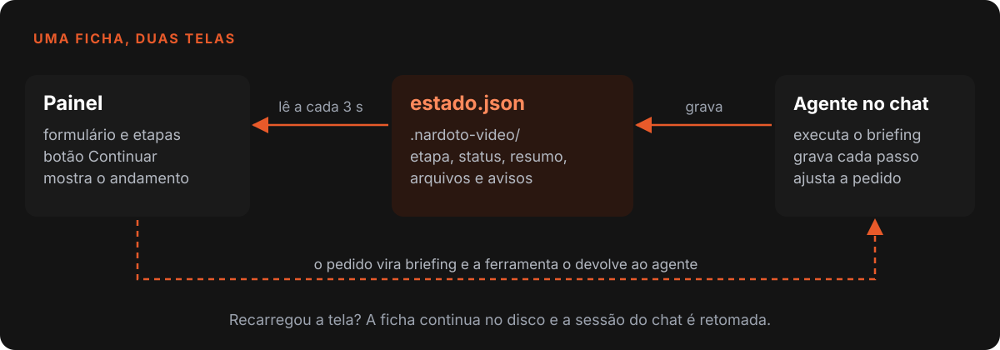
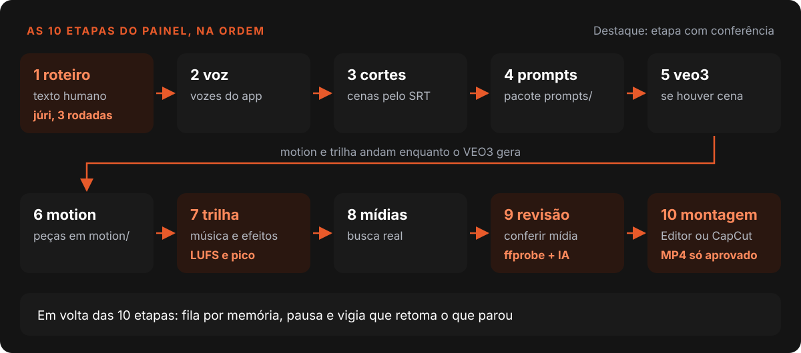
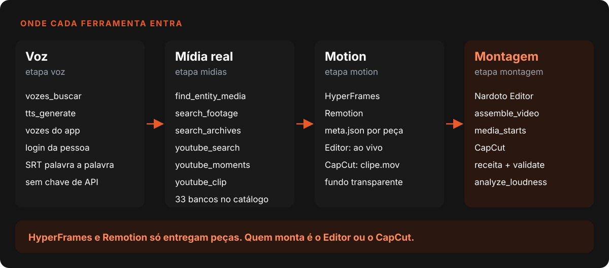
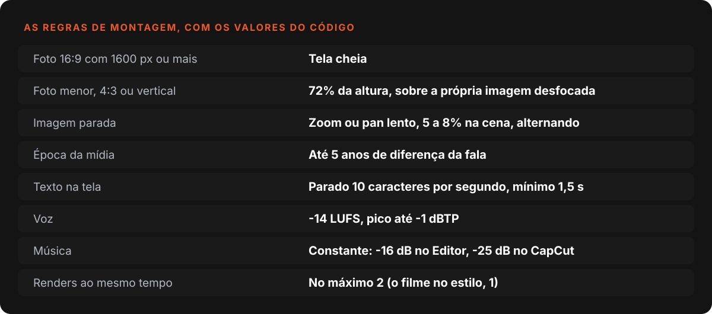

Nardoto
NardotoComo funciona o gerador de vídeo do Nardoto Studio
O Criar Vídeo roda 10 etapas pelo painel e o chat só ajusta. Veja a ficha única, os gates, a busca de mídia real, a mixagem medida e a fila de vídeos.

O "Criar Vídeo" é a parte do Nardoto Studio que recebe uma ideia ou um roteiro pronto e devolve um vídeo montado no Nardoto Editor ou no CapCut. Este post conta como organizei o caminho e onde errei.
Quem leu o post sobre o chat que pilota o app com MCP já conhece a ponte. Aqui o assunto é o que passa por ela quando o pedido é "faz um vídeo de 10 minutos". O chat aceita cinco IAs, e o fluxo vale para qualquer uma.
O que o código diz hoje (29/10/2026)
- O painel conduz 10 etapas (de 7 a 11, conforme o modo), e 3 ferramentas MCP (
producao_*) deixam o chat dirigir o mesmo painel.- O código do Criar Vídeo soma 8.732 linhas em 45 arquivos, em 34 commits desde 01/09/2026.
- 305 casos de teste em 24 arquivos cobrem plano, briefing, vigia, fila e gates.
Três desenhos até chegar neste
O primeiro, em junho, foi uma "Linha de Produção" com 11 etapas, em que o renderer chamava a IA direto e o chat ficava escondido. O segundo, em julho, foi o oposto: "chat-first", com o painel só como visualização.
O terceiro é o de hoje, decidido em 08/10: a pessoa usa o painel, e o chat mostra o que o painel faz e serve para ajustar. O que me fez largar o chat-first: a tela recarregou, a sessão nova do chat não sabia do pedido oculto do painel, improvisou um roteiro, e o painel voltou sozinho para "Analisar".
A solução foi uma ficha única por vídeo: o arquivo .nardoto-video/estado.json, com etapas, status, resumo e arquivos. O painel lê a ficha a cada 3 segundos e o agente grava nela a cada passo. Nada de estado só em React.

Quando o chat chama producao_iniciar, o painel preenche o mesmo formulário, grava o plano e devolve o briefing como resposta da ferramenta. O agente executa no mesmo turno.
Um erro típico: o briefing pede etapas como lista, mas o agente às vezes gravava um mapa ({"roteiro": "pronto"}). O painel descartava o formato calado e ficava parado, com a produção andando atrás. Hoje normalizarEtapas aceita os dois.
As etapas e onde ficam os gates
A VEO3 só entra se houver cena dela (9 ou 10 etapas no modo comum). O "Filme no estilo" tem 7, o documentário com templates 8, e um vídeo de referência acrescenta uma.

| Etapa | O que a faz fechar |
|---|---|
roteiro |
Júri feito por quem não escreveu o texto, até 3 rodadas |
voz |
Narração das vozes do app e o SRT do motor de voz |
midias |
Mídia real da entidade citada na fala, com créditos |
revisao |
Juiz das cenas: ffprobe em todas, depois avaliação visual |
trilha |
Voz e música medidas, não ajustadas de ouvido |
montagem |
Projeto salvo; o MP4 só sai se a pessoa ligou "Renderizar ao terminar" |
O gate que virou código e ficou de fora
Esta é a parte que mais me incomoda. Pedir 18 minutos rendia vídeos de 21, 15, 13 ou 11. A regra existia em prosa, e prosa não executa. Virou código em videoAssetGates.js: palavras divididas por 145, o ritmo medido em português, então 18 minutos são 2.610 palavras. O módulo tem 18 testes e, desde 31/07, o motor antigo de TTS recusa gerar áudio com o roteiro fora da faixa.
Só que a narração do Criar Vídeo hoje passa pelas vozes do app, no renderer, e não por esse motor. Nenhuma skill nem o briefing chama check_script_length ou set_video_target. A duração é guiada pelo briefing e pelo júri, sem recusa dura. Escrevo porque o post é sobre o que o código diz, não sobre o que eu queria que dissesse.
É código: ids do pedido validados, fila de vídeos, contadores do vigia e mixagem medida. É só instrução no briefing: não gastar com geração paga sem aprovação e não exportar o MP4 sem ordem. Um agente poderia ignorar essas.
Onde cada ferramenta entra

Voz. A narração sai sempre das vozes do próprio app, com o login da pessoa e sem chave de API. vozes_buscar procura no catálogo e tts_generate gera. O SRT palavra a palavra que volta do motor é a base de tempo de tudo: o plano estima as cenas a 145 palavras por minuto, mas o SRT decide a duração real.
Motion. HyperFrames e Remotion não montam vídeo, só entregam peças (rótulo, contador, título) em motion/<id>/. No Editor a peça entra ao vivo pelo fonte/index.html, editável sem renderizar. No CapCut entra o clipe.mov transparente.
Mídia real: fidelidade vale mais que qualidade
Na primeira versão de um vídeo sobre a história de uma fabricante de motos, o agente trocava a entidade citada por um banco genérico e bonito, e o juiz aprovava. Ficou "genérico, sem graça". Na segunda (03/10) a cena passou a mostrar exatamente a pessoa, o produto, o lugar ou o evento que a fala cita, mesmo com foto pequena, velha ou granulada.
Duas decisões sustentam isso. O juiz: mídia genérica numa cena com nome próprio nunca sai aprovada. A camada técnica usa os filtros blackdetect e freezedetect do FFmpeg 1 e reprova vídeo com menos de 90% da duração da cena ou com mais de 30% de quadro preto ou congelado.
A escada de busca: para lugar, evento e época, vídeo primeiro: acervos de arquivo e YouTube, com youtube_moments achando o segundo exato pela legenda e youtube_clip baixando só o trecho. A busca vai em inglês e na língua de origem, com a data local (Hamamatsu 1946 vira 浜松 昭和21年). O catálogo tem 33 bancos, e a época da mídia deve bater com a da fala em até 5 anos.
A foto pequena entra menor, inteira, sobre um fundo. No compor-fotos.cjs, foto 16:9 com 1.600 pixels ou mais ocupa a tela. O resto entra com 778 de 1.080 pixels de altura (72%) sobre a própria imagem ampliada, desfocada e escurecida. Nunca esticada, nunca com barra preta.
Outro erro: a chave do Pexels colada na configuração dos MCPs era gravada como mcp:mcp-pexels:PEXELS_API_KEY, e a busca lia pexels_api_key. Resultado: "criei a API e não funciona". Hoje getChaveBanco lê os dois nomes.
Montagem: regras que a IA não adivinha

Imagem parada. Um vídeo saiu com as fotos paradas porque o template clonado tinha "câmera parada". Agora o briefing sempre manda motion: kenburns. No documentário, depois do piloto, o movimento é só zoom de 5% entrando e saindo, em clipes feitos com zoompan 1. As duas regras coexistem.
Tempo de leitura. Edição com IA costuma ignorar o tempo de leitura. Depois que a última letra entra, o texto fica parado 10 caracteres por segundo, no mínimo 1,5 segundo. "Em 1850, 3 mil crianças limpavam chaminés" tem 41 caracteres e fica 4,1 segundos.
Som. O Editor mede loudness e pico verdadeiro, grandezas que a recomendação ITU-R BS.1770 define 2. A voz fica em -14 LUFS. A música tem volume de faixa constante: -16 dB no Editor (music_volume: 0.158, duck: false) e -25 dB no CapCut. Antes de exportar, analyze_loudness precisa devolver a voz entre -15 e -13 LUFS.
Filme no estilo e o piloto de engenharia
Quando a pessoa escolhe um estilo completo da biblioteca de templates, o vídeo inteiro sai pelo motor do próprio estilo. A dor veio do render: com 2 workers a memória estourou e o filme saiu com trecho preto. O briefing agora manda --workers 1 e uma conferência de quadro preto no final.
O piloto de engenharia (Torre Eiffel, 16,6 minutos) provou o processo. Custo medido: 568 chamadas de IA, 1 h 57 min de relógio e entre 70 e 86 dólares em preço de API. Cerca de 75% foi contexto relido ou criado. O custo está em reler, não em escrever.
Fila, vigia e celular
Em 14/10 a máquina caiu com 8 vídeos começados juntos. Cada vídeo sobe a própria IA com seus servidores MCP, perto de 2 GB. A fila agora conta memória: (RAM total menos 6 GB) dividido por 2 GB, com mínimo de 1.
| RAM do computador | Vídeos juntos |
|---|---|
| 8 GB | 1 |
| 16 GB | 5 |
| 32 GB | 13 |
Os renders têm fila à parte (veja o render do Editor). Um vídeo já esgotou a memória com 75 Chrome de render abertos.
O vigia olha cada vídeo a cada 15 segundos e, com "Aprovar sozinho", retoma a etapa parada. Três retomadas sem progresso mandam pular a etapa, e oito no total, desistir. Etapa que falha duas vezes vira erro e o fluxo segue, com um cartão "CENA PENDENTE" no lugar da mídia. O MP4 final sempre espera a pessoa.
O celular (Beta, v11.2.1) pede um vídeo por ideia ou roteiro de até 4.000 caracteres. Segue o caminho do MCP e a regra da fila: sem vaga, o vídeo espera.
O que eu levaria para qualquer projeto
- Uma ficha só, em disco. Se a interface e a IA guardam estados separados, um dia divergem. Um arquivo lido pelos dois resolve, inclusive o reload.
- Regra em prosa vira código, e o código tem que estar no caminho certo. Meu gate de duração mostra os dois lados do problema.
- Fidelidade antes de beleza. Um juiz que aprova imagem bonita e errada é pior que nenhum. Foi assim que passei a trabalhar com IA, memória e regras: cada queixa vira regra.
- Meça som e tempo. Nível medido e leitura a 10 caracteres por segundo valem mais que "mais baixo" e "mais lento".
- Limite por memória, não por vontade. Paralelismo precisa de fila, e a conta é de RAM.
Referências
- FFmpeg Filters Documentation (blackdetect, freezedetect, zoompan)
- ITU-R BS.1770, algoritmos de loudness e pico verdadeiro
Escrito por Tharcisio Nardoto, engenheiro civil e criador do Nardoto Studio.